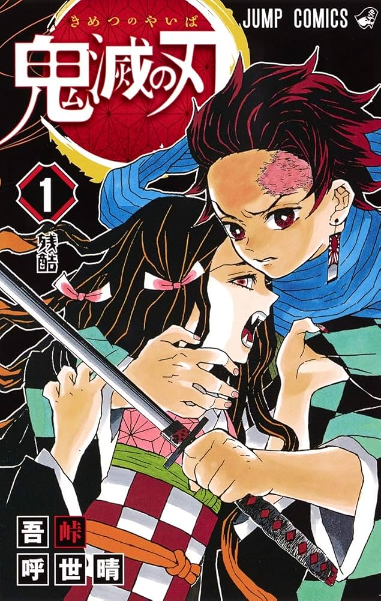
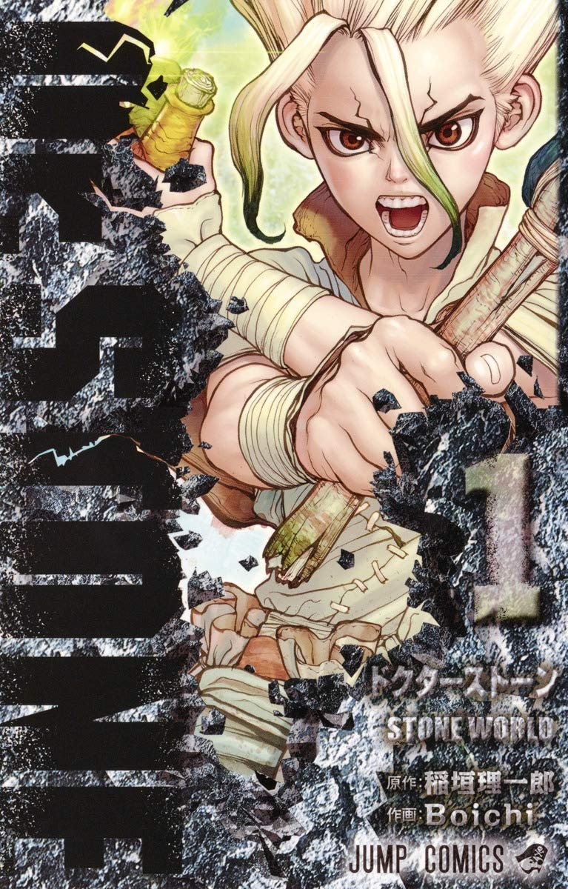
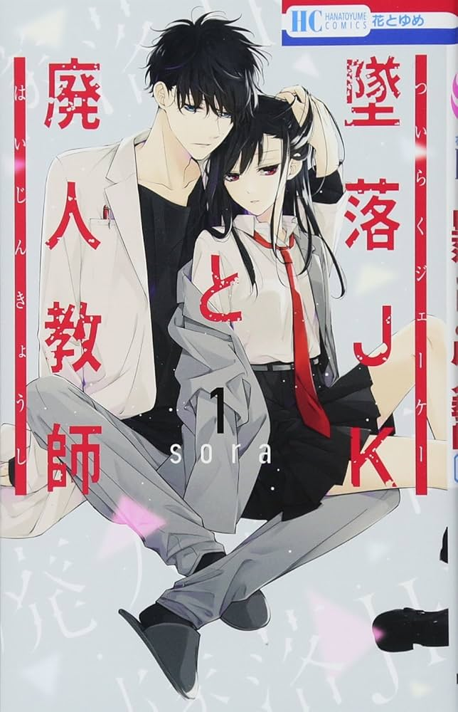

好きな漫画
鬼滅の刃
魅力的なキャラクターがたくさんいます。人間だけでなく、鬼側のエピソードもとても丁寧に描かれていて誰もが推しキャラに出会える作品だと思います。

| 作者 | 吾峠呼世晴 |
|---|---|
| 巻数 | 全23巻 |
| あらすじ | 時は大正時代。炭を売る心優しき少年・炭治郎の日常は、家族を鬼に皆殺しにされたことで一変する。 唯一生き残ったものの、鬼に変貌した妹・禰豆子を元に戻すため、また家族を殺した鬼を討つため、炭治郎と禰豆子は旅立つ！ |
Dr. STONE
何もかも一から作り上げていく世界観がとてもワクワクする作品です。個性や才能が豊かなキャラクターが多く登場します。それぞれが得意不得意を補い合いながらいろいろクラフトしていく姿がとても面白かったです。

| 作者 | 原作・稲垣理一郎 作画・Boichi |
|---|---|
| 巻数 | 全27巻 |
| あらすじ | 一瞬にして世界中すべての人間が石と化す、謎の現象に巻き込まれた高校生の大樹。数千年後－－－。目覚めた大樹とその友、千空はゼロから文明を作ることを決意する！ |
墜落JKと廃人教師
JKと先生の性格はどちらもネガティブですが親しみやすく、どちらも賢いです。2人の掛け合いが結構面白いです。クズででイケメンな先生がめちゃ刺さ去りました。

| 作者 | sora |
|---|---|
| 巻数 | 全20巻 |
| あらすじ | 「死ぬ前に俺と恋愛しない？」byクズ教師 究極のつり橋効果LOVE！女子高生の扇言は、失恋を苦に自殺しよう としていたところを物理教師の灰葉仁先生（通称・灰仁）に邪魔される。「死ぬ前に俺と恋愛しない？」と先生に告白（！）され焦る扇言と、 事あるごとに扇言に声をかけたり家に来たりするようになった先生のキケンなラブストーリー！ |